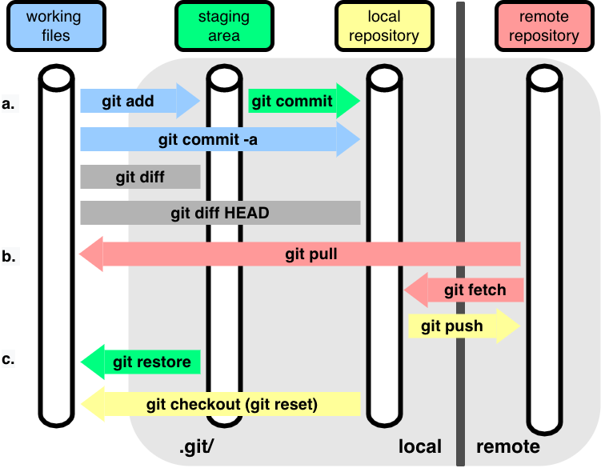

Version Control: Introduction to Git
What is Git?
Git is a distributed version control system designed to handle everything from small to very large projects with speed and efficiency. It is used to track changes in source code during software development, enabling multiple developers to work together on non-linear development.
Key Features of Git
- Distributed Version Control: Each developer has a full copy of the project, including its history, which means work can be done offline and later synced with the central repository.
- Branching and Merging: Git allows the creation of branches to experiment with new features. These branches can be merged back into the main branch when the feature is ready.
- Fast and Lightweight: Git is designed to be fast and efficient, even for large projects.
- Data Integrity: Every file and commit is checksummed, ensuring the integrity of your code.
Basic Git Commands
git init: Initializes a new Git repository.git clone [url]: Clones a repository from a remote server.git add [file]: Stages a file for commit.git commit -m "[commit message]": Commits the staged changes with a message.git push: Pushes commits to a remote repository.git pull: Fetches and merges changes from a remote repository.

Source: https://merely-useful.tech/py-rse/figures/git-cmdline/git-remote.png
Here's a concise guide to a basic Git workflow, covering cloning a repository, creating a file, adding it to the repository, committing, and pushing the changes:
Basic Git Workflow
Create Repo on the Gitlab instance in the Webbrowser
Clone the Repository Clone the remote repository to your local machine:
git clone https://gitlab.mathematik.uni-stuttgart.de/user1234/repositoryCreate a New File Navigate to the cloned repository directory and create a new file:
cd repository touch newfile.txtAdd the File to Staging Add the new file to the staging area, preparing it for a commit:
git add newfile.txtCommit the File Commit the staged file with a descriptive message:
git commit -m "Add newfile.txt 😎"Push the Commit to Remote Repository Push the commit to the remote repository:
git push origin main
Gitignore
- The
.gitignore-file to ignore files in the Git (automatically generated files, build folders, ...)
# content of .gitignore (dot means hidden file)
docs/build/* # (star/asterix is placeholder/wildcard to ignore everything in that folder)Getting Started
To start using Git, first install it on your machine. Then, set up your user name and email with the following commands:
git config --global user.name "Your Name"
git config --global user.email "your.email@example.com"Further reading
- https://aeturrell.github.io/coding-for-economists/wrkflow-version-control.html
- https://merely-useful.tech/py-rse/git-cmdline.html
Explain gitignore and make example